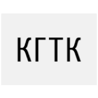

Научная деятельность

>15 лет
ОБФ занимается научной работой в области технологии тарного картона
Вступительный короткий текст о том, что ОБФ видит своей миссией развитие
науки в области производства тарного картона, вкладывает большие силы в
это и использует последние наработки для улучшения качества продукции
Инновационные технологии — путь к улучшению продукции

Система контроля качества
На сегодняшний день все лаборатории отвечают техническим и
эксплуатационным требованиям, оснащены системами поддержания
стандартных климатических условий в помещении, полной линейкой
испытательного оборудования от лучших поставщиков: Frank PTI, TLS,
Xell GmbH и др.
Ученые в разработке процессов производства
Все научные работы наших сотрудников непосредственно связаны с
задачами действующего производства и направлены на
совершенствование физико-механических свойств основного продукта
компании ОБФ — макулатурного тарного картона.
9
научных сотрудников с учеными степенями кандидатов наук
по технологии ЦБП
1
доктор технических наук — Генеральный директор Компании ОБФ Дулькин Дмитрий Александрович
47
публикаций
в ведущих изданиях
России и за рубежом

Цитата про научный подход ... ОБФ взаимодействует с учреждениями среднего профессионального, высшего и дополнительного образования. Для студентов организуются учебные, производственные и преддипломные практики, проводятся экскурсии, совместные мероприятия
Дулькин Дмитрий Александрович
Доктор технических наук, Генеральный директор компании ОБФ
Качество
под контролем науки
под контролем науки
Лаборатории технического контроля — неотъемлемая часть производства высококачественных материалов.

В 2019 году все лаборатории на производствах ОБФ прошли модернизацию
На сегодняшний день все лаборатории отвечают техническим и эксплуатационным требованиям, оснащены системами поддержания стандартных климатических условий в помещении, полной линейкой испытательного оборудования от лучших поставщиков: Frank PTI, TLS, Xell GmbH и др.
Вклад в научное развитие отрасли
ОБФ взаимодействует с учреждениями среднего профессионального, высшего и дополнительного образования.

Санкт-Петербургский государственный университет промышленных технологий и дизайна
Северный (Арктический) федеральный университет имени М. В. Ломоносова

Уральский государственный лесотехнический университет

Сокольский лесопромышленный политехнический техникум
Вологодский государственный университет

Кондровский гуманитарно-технический колледж
Для студентов организуются учебные, производственные и преддипломные практики, проводятся экскурсии, совместные мероприятия с городскими и районными администрациями: дни карьеры, дни открытых дверей, конкурсы профессионального мастерства.
Вместе с образовательными учреждениями разрабатываются учебные программы, проводятся курсы повышения квалификации. Специалисты Компании принимают участие в работе государственных аттестационных и экзаменационных комиссий вузов и коллежей.
50
студентов ежегодно проходят практику на предприятиях
Наука в основе качества тарного картона
Оригинальные научные разработки лежат в основе системной работы по улучшению качества тарного картона — стратегического продукта компании ОБФ. Мы неустанно работаем над улучшением потребительских характеристик нашей продукции.

Последние научные публикации
Новости науки
На БКФ улучшили производительность труда
Ъ FM рассказывает, как власти намерены сократить объем захоронения
отходов. Новый сервис позволит.
14 сентября

На БКФ улучшили производительность труда
Ъ FM рассказывает, как власти намерены сократить объем захоронения
отходов. Новый сервис позволит.
14 сентября
На БКФ улучшили производительность труда
Ъ FM рассказывает, как власти намерены сократить объем захоронения
отходов. Новый сервис позволит.
14 сентября